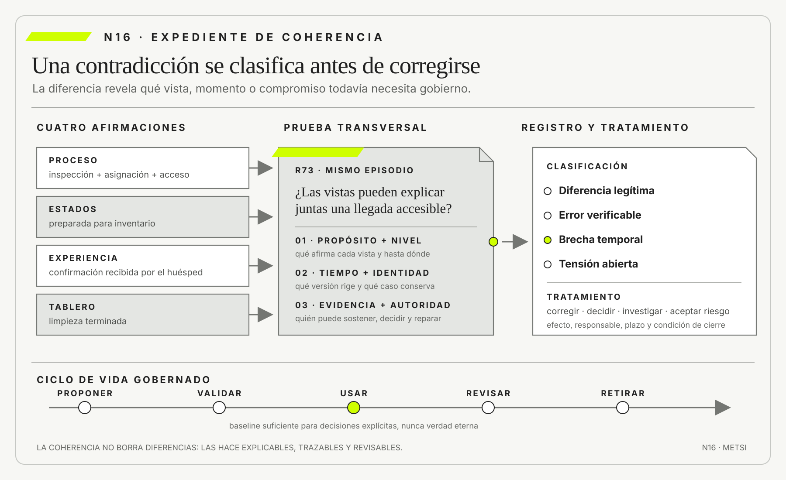

Peter Senge
The Fifth Discipline, Revised Edition. Currency · 2006
Integró modelos mentales, aprendizaje organizacional y pensamiento sistémico.

La coherencia entre modelos no exige que contengan los mismos elementos ni que coincidan literalmente.
Coherencia, contradicciones productivas y ciclos de vida
Ruta priorizada: 1 h 20 min a 1 h 40 min. Núcleo de lectura: 60 a 75 min; preparación: 20 a 25 min. Las extensiones agregan 30 a 45 min y profundizan el recorrido.

Nota. SIN NUM. identifica aparatos de orientación y referencia.
Seis referentes y las obras principales utilizadas para construir N16.
Integró modelos mentales, aprendizaje organizacional y pensamiento sistémico.

Investigó las condiciones que permiten comunicar errores, incertidumbre y desacuerdo para aprender colectivamente.

Mostró cómo la reflexión sobre la acción permite revisar marcos, decisiones y prácticas frente a situaciones problemáticas.

Sistematizó abstracciones, responsabilidades y vistas para discutir estructuras complejas sin confundirlas.

Organizó desarrollo y compromiso alrededor de riesgo y ciclos iterativos.

Expuso límites de secuencias lineales y necesidad de retroalimentación en desarrollo.
N16 no resume estas fuentes ni las convierte en receta. Las pone en tensión para construir juicio profesional.
¿Cómo saber si dos modelos se contradicen por error, porque miran cosas distintas o porque el sistema todavía no resolvió una tensión real?

Dos vistas pueden diferir legítimamente y seguir formando una cartera íntegra.
Una universidad rediseña la inscripción a finales. El modelo de proceso muestra una validación automática y una excepción manual para estudiantes próximos a graduarse. La arquitectura indica que el servicio académico sólo acepta solicitudes que superan todas las reglas. La matriz de autoridad asigna a Secretaría Académica la capacidad de autorizar excepciones. El prototipo permite seleccionar “solicitar revisión”.
Durante una prueba, Martina utiliza esa opción. La interfaz confirma que su caso será revisado. El proceso deriva a Secretaría. La autoridad aprueba. Sin embargo, el servicio rechaza nuevamente porque su contrato no admite excepciones. Cuatro modelos describían partes razonables y, juntos, prometían una transición imposible.
La primera respuesta propone corregir el diagrama de arquitectura. La segunda, quitar la excepción del proceso. La tercera, modificar el servicio. Elegir sin investigar convertiría un desacuerdo documental en decisión técnica. El equipo necesita saber qué representación está vigente, qué fuente sostiene cada regla y qué promesa decidió la institución.
Revisa fechas. El proceso fue actualizado después de una resolución académica. La matriz de autoridad también. La arquitectura se generó desde producción el día anterior y refleja fielmente que el servicio todavía no implementa la regla. El prototipo representa la experiencia futura aprobada. Ningún modelo es simplemente falso. Están hablando de momentos y compromisos diferentes sin declararlo.
La contradicción revela una brecha entre norma, diseño e implementación. Si se “sincronizan” los documentos con producción, desaparece la política aprobada. Si se modifica producción sin plan, puede alterarse una regla crítica. Si se mantiene el prototipo, se promete una revisión que no puede completar.
El equipo registra la contradicción como hallazgo: la excepción está aprobada y no desplegada; la interfaz no debe habilitarla hasta que el servicio y la operación tengan capacidad; los casos urgentes requieren una ruta temporal con autoridad y evidencia. Cada modelo conserva su propósito y se marca como actual, objetivo o transitorio.
Luego ejecuta un recorrido con el mismo caso a través de las cuatro vistas. La solicitud de Martina debe mantener identidad. El proceso muestra el handoff. La autoridad demuestra quién decide. La arquitectura localiza el contrato. El estado distingue pendiente, aprobada y aplicada. Cuando una vista no puede representar una pieza, enlaza otra en lugar de inventarla.
La reunión cambia de tono. Ya no se pregunta cuál dibujo tiene razón. Se pregunta qué afirmación formula, para qué momento, con qué evidencia y qué decisión queda abierta. La contradicción deja de ser vergüenza documental y se convierte en instrumento de aprendizaje.
Esta lectura cierra el Bloque C. N11 estableció cuándo una representación sostiene una afirmación. N12 separó transición, evidencia y autoridad. N13 trató falla parcial. N14 reconstruyó flujo. N15 seleccionó vistas. N16 integra esos artefactos sin exigir uniformidad. La meta es un conjunto coherente porque puede explicar sus acuerdos, diferencias y cambios.
HH-15 dejó cinco familias de representación para decidir el piloto de validación previa y un tablero derivado para la consulta de Elena Acosta. Ella pide recorrer la reserva R73, una llegada con requerimiento de accesibilidad y una cerradura cuya vigencia debe comprobarse antes del ingreso. En el proceso, la habitación es entregable cuando inspección, asignación y acceso están listos.

En la máquina de estados puede figurar entregable antes de asignar porque esa vista fue diseñada para inventario. En el recorrido de experiencia, el término aparece cuando el huésped recibe confirmación. En el tablero derivado se cuenta desde que Housekeeping informa limpieza terminada.
Cada uso nació de una pregunta distinta, pero la misma etiqueta crea una falsa coherencia. Mariela Benítez queda evaluada por una entrega que no controla cuando el tablero convierte limpieza terminada en promesa cumplida. Lucía Ferreyra recibe una señal de capacidad aunque todavía no pueda asignar o emitir acceso. Federico Müller integra estados cuyos contratos parecen coincidir y representan transiciones diferentes. Camila Duarte puede confirmar antes de que exista una condición operativa suficiente. Elena observa un indicador favorable mientras la espera del huésped aumenta.
El equipo vuelve a las fuentes: episodios de HH-14, marcas de inspección, eventos del PMS, vigencias de cerradura, mensajes de Recepción y la promesa comunicada. No busca cuál archivo tiene la palabra correcta, sino qué afirmación sostiene cada uno, para qué decisión y momento. La contradicción terminológica afecta, además, autoridad, métrica y experiencia.
HH-16 no impondrá una definición única por decreto. Construirá correspondencias, alcance y condiciones. Puede conservar “preparada”, “asignable”, “accesible” y “confirmada”, y definir cuándo su combinación sostiene “entregable para R73”. Elena decidirá el avance del piloto sólo después de recorrer el caso ordinario y la excepción. Si cambian la regla, el proveedor de cerraduras o la evidencia del piloto, las correspondencias y la decisión deberán revisarse. La contradicción semántica se convierte así en una mejora auditable del sistema.
La coherencia entre modelos no exige que todos contengan lo mismo ni que usen exactamente las mismas palabras. Exige que sus afirmaciones sean compatibles con su propósito, alcance, nivel, tiempo, evidencia y decisión. Dos vistas pueden diferir y, aun así, formar una cartera íntegra. Una contradicción es productiva cuando vuelve visible un supuesto, una frontera, una regla o una transición no resuelta. Deja de ser productiva si permanece sin dueño, efecto ni plazo. La auditoría debe clasificarla y convertirla en corrección, decisión, investigación o riesgo aceptado. Los modelos poseen ciclo de vida. Se proponen, validan, usan, revisan, reemplazan y retiran. Mantener coherencia significa gobernar conceptos y relaciones a través del cambio, no congelar documentos. La trazabilidad conecta evidencia, decisión, versión y consecuencia.
La tesis se vuelve operativa al conservar propósito, vigencia, responsable y vínculos entre modelos sin exigir que perspectivas legítimamente distintas digan lo mismo. Esa secuencia obliga a declarar qué cambia, qué permanece abierto y qué evidencia podría modificar la decisión. El rigor no proviene de agregar términos, sino de hacer reconstruible el paso entre una observación, una explicación y una acción.
Un ejemplo sencillo permite verlo: «cliente» puede significar quien paga en un catálogo y quien recibe el servicio en un mapa de experiencia; combinar métricas vuelve crítica la diferencia. El caso muestra por qué una misma señal admite explicaciones e intervenciones diferentes. Antes de ampliar alcance conviene precisar población, condición de éxito y fuente de evidencia.
El límite también importa: centralizar archivos y llamarlo fuente única de verdad, o aceptar contradicciones que activan acciones incompatibles como simple riqueza interpretativa. Ese contraejemplo evita convertir una idea útil en receta universal. Una decisión puede ser provisional, pero debe decir qué protege ahora y cuándo volverá a examinarse.
En Hotel Horizonte, Comercial, Recepción y Housekeeping usan «disponible» para decisiones diferentes y deben declarar cuándo cada sentido vale. El caso longitudinal obliga a sostener la misma promesa mientras cambian el modelo y la evidencia; así puede verse qué aprendió realmente el equipo.
La consecuencia profesional es tratar modelos como activos vivos; N17 elegirá lógicas de intervención según incertidumbre, reversibilidad y consecuencia. La tesis no cierra la discusión: fija un criterio común para que el encuentro pueda comparar argumentos, producir evidencia y decidir sin ocultar incertidumbre.
La coherencia entre modelos se prueba con el mismo episodio, clasifica la diferencia y asigna tratamiento, responsable, plazo y condición de cierre a lo largo del ciclo de vida.

N15 justificó cada modelo por pregunta, audiencia, costo y vigencia. HH-15 dejó una cartera pequeña con vínculos. N16 somete esa cartera a escenarios comunes y estudia diferencias.
No agregará detalle para hacer coincidir dibujos. Tampoco diseñará estrategia de intervención, que abre N17. El producto será HH-16, expediente de coherencia y ciclo de vida. Clasificará acuerdos y contradicciones, decidirá tratamiento y cerrará qué conjunto de modelos puede sostenerse.
Dos mapas de una ciudad pueden mostrar transporte y riesgo de inundación. No contienen las mismas relaciones, pero pueden usar la misma calle y período sin contradecirse. El problema aparece si uno la ubica abierta y otro cerrada para la misma decisión y momento.
ISO/IEC/IEEE 42010:2022 permite comprender una descripción arquitectónica como conjunto de vistas gobernadas por puntos de vista y preocupaciones. La coherencia se evalúa dentro y entre vistas según sus reglas, no por repetición de contenido.
Un modelo de proceso y uno de estados deben corresponder donde se tocan. El proceso puede omitir estados internos; la máquina puede omitir actores. Si ambos nombran “aprobada”, deben declarar una relación compatible.
La prueba comienza con propósito, alcance y tiempo. Muchas contradicciones desaparecen al explicitar esos metadatos. Otras se vuelven más precisas y exigen decisión.
La auditoría no compara páginas completas por semejanza. Selecciona afirmaciones que se tocan, identifica la relación esperada y recorre un mismo episodio. El resultado debe permitir distinguir una omisión legítima de una incompatibilidad capaz de cambiar una acción, una promesa o una responsabilidad.
Existe cuando una palabra representa conceptos diferentes o varias palabras ocultan el mismo. “Disponible”, “lista” y “entregable” en Hotel Horizonte parecen sinónimos y no lo son.
La corrección puede renombrar, definir alcance o crear correspondencia. Un glosario único ayuda sólo si las áreas comparten concepto. Forzar una palabra puede borrar una distinción necesaria.
Michael Jackson mostró la importancia de describir fenómenos y dominios antes de confundirlos con la máquina. La semántica debe anclarse en qué ocurre y quién puede afirmarlo.
La evidencia es el uso en episodios. Si dos personas toman decisiones incompatibles con el mismo término, la diferencia tiene consecuencia y requiere tratamiento.
La prueba registra término, concepto, actor, fuente y acción habilitada. Luego sustituye la palabra por la condición observable. Si “lista” significa inspección terminada para Mariela y acceso emitible para Lucía, el problema no se resuelve con un sinónimo común. Se conservan ambos conceptos, se declara su relación y se reserva el término compuesto para la decisión que realmente necesita reunirlos.
Una vista de sistema puede terminar en el PMS; el proceso, en el acceso del huésped. No se contradicen por tener fronteras distintas. Se contradicen si una conclusión del PMS se presenta como outcome completo.
También puede mezclarse nivel. Un proceso habla de capacidad institucional y la arquitectura, de un punto de integración. Las relaciones no pueden compararse directamente. Se necesita una vista puente o una correspondencia.
La frontera se vuelve problemática cuando excluye un actor que absorbe consecuencias. N05 y N09 aportan esa prueba. La consistencia documental no justifica una frontera injusta.
La decisión es ampliar, vincular o limitar afirmación. No siempre se modifica el modelo.
La prueba utiliza una conclusión que atraviese la frontera. En Hotel Horizonte, el tablero puede cerrar en limpieza terminada y el proceso, en ingreso efectivo. Ambos recortes son válidos hasta que el primero se usa para afirmar que Recepción ya puede cumplir la promesa. En ese punto se agrega una correspondencia o se limita expresamente el indicador. El criterio de cierre es que la audiencia pueda reconocer qué outcome queda fuera.
Un modelo actual y uno objetivo pueden diferir correctamente. El defecto es ocultar el tiempo. Fecha de captura no equivale a período de validez; un documento reciente puede describir futuro.
Se distinguen actual, transitorio, objetivo, histórico y escenario. Cada uno necesita condición de entrada y salida. La transición entre modelos también se planifica.
La historia de Martina muestra norma futura y producción actual. Corregir uno para que copie al otro destruiría información. La cartera debe representar brecha y criterio de cierre.
La contradicción temporal se resuelve mediante plan, restricción de uso o actualización, no sólo edición.
El expediente vincula cada versión con una decisión y una población. Una vista objetivo puede orientar el diseño del piloto y no capacitar todavía a Recepción; una vista histórica puede explicar un reclamo y no gobernar una llegada nueva. La prueba toma una fecha anterior, una dentro de la transición y otra posterior. Si no puede determinarse qué modelo rige en cada caso, la diferencia temporal continúa abierta.
Una norma puede otorgar autoridad y la operación no ofrecer mecanismo. Un procedimiento puede exigir revisión y la cola no tener responsable. La diferencia representa incumplimiento, transición o imposibilidad.
La autoridad normativa no crea capacidad. La ejecución frecuente tampoco deroga automáticamente la norma. Se necesitan responsables para decidir si implementar, modificar política o aceptar riesgo temporal.
Chris Argyris y Donald Schön distinguen aprendizaje de circuito simple, que corrige acciones dentro de reglas, y doble, que revisa supuestos y normas. Una contradicción productiva puede abrir el segundo.
La evidencia debe incluir texto normativo, episodios y consecuencias. Ninguna fuente vence por jerarquía técnica.
El tratamiento conecta regla, capacidad y ruta de reparación. Se comprueba quién recibe el caso, qué información puede consultar, qué acción puede ejecutar y quién responde si la excepción falla. Mientras falta capacidad, una restricción temporal puede impedir prometer el servicio o habilitar una vía manual autorizada. Declarar la norma sin ese mecanismo no cierra la contradicción: sólo documenta el deber incumplido.
Dos tableros pueden mostrar valores distintos por población, ventana, unidad o transformación. N11 ya enseñó a auditar afirmaciones. N16 verifica que los metadatos viajen con la vista.
Si ambos pretenden medir lo mismo bajo igual definición, la diferencia indica error o demora. Si miden outcomes distintos, puede ser legítima. Promediar oculta la causa.
El análisis reproduce cálculos, identifica procedencia y decide qué indicador corresponde a la pregunta. También conserva la divergencia si revela tiempos del sistema. La coherencia cuantitativa no significa una cifra única, sino comparabilidad explicada.
La prueba escribe para cada valor numerador, denominador, unidad, ventana, momento de corte y regla de exclusión. Después reconstruye algunos casos en las fuentes. Dieciocho habitaciones preparadas y dieciséis ingresos confirmados no son cifras incompatibles si las poblaciones y los cierres difieren; sí lo son si el tablero presenta ambas como la misma entrega. La diferencia queda gobernada cuando puede explicarse sin inventar una equivalencia.
Dos vistas pueden referirse a una misma entidad con identificadores incompatibles. El proceso habla de una reserva, el sistema de acceso registra una estadía, la facturación agrupa consumos por cuenta y el tablero consolida por habitación. Mientras todo funciona, esas diferencias parecen administrativas. Cuando existe una excepción, impiden reconstruir el caso completo.
La identidad no se resuelve eligiendo un código universal. Primero se determina qué entidad necesita cada decisión y durante qué período conserva significado. Una reserva puede cancelarse y reemplazarse; una estadía comienza con el ingreso efectivo; una habitación cambia de huésped. Convertirlas en sinónimos crea asociaciones falsas.
La granularidad introduce otra tensión. Un mapa mensual de ocupación y el episodio de una familia describen el mismo servicio a escalas diferentes. El primero permite decidir capacidad; el segundo revela daño, espera y reparación. No corresponde exigir al agregado que conserve todo el detalle ni usarlo para negar lo que muestra el caso.
El expediente registra reglas de correspondencia: una reserva puede originar cero, una o varias estadías; una estadía puede reunir varias asignaciones de habitación; una cuenta puede incluir consumos ajenos al alojamiento. Estas cardinalidades son afirmaciones que deben probarse, no convenciones gráficas.
La auditoría recorre un caso que cambie de identidad o nivel. Una reubicación, una fusión de solicitudes o una entrega parcial exponen si las vistas conservan continuidad. Si el vínculo sólo funciona en el camino ordinario, la coherencia es aparente.
El control se completa con una conciliación de conteos. Si una vista registra doce solicitudes y otra catorce casos, la diferencia debe explicarse mediante cardinalidad, exclusiones o tiempo. Una cifra que cierra por casualidad no valida la relación. Se seleccionan ejemplos concretos de cada transformación y se comprueba que puedan seguirse en ambas direcciones. Esta prueba evita que una correspondencia escrita como regla general oculte pérdidas en los bordes.
Esta clase de contradicción importa especialmente cuando se entrenan modelos analíticos o se integran fuentes. Una unión técnicamente válida puede multiplicar registros, borrar episodios o atribuir resultados a la persona equivocada. N11 exige procedencia para la afirmación; N16 exige además que la identidad usada por cada vista sea compatible con la decisión.
Una vista puede asignar una actividad a un rol y otra atribuir la decisión a un área, un sistema o una persona. No siempre existe conflicto. Ejecutar, recomendar, aprobar y responder por la consecuencia son relaciones diferentes. El problema aparece cuando esa diferencia impide saber quién puede actuar o reparar.
La matriz de responsabilidades suele simplificar para comunicar gobierno. El proceso muestra participación efectiva. La arquitectura identifica permisos técnicos. Una persona puede tener credencial para ejecutar un comando sin autoridad para decidirlo; también puede poseer autoridad formal sin acceso o capacidad durante una guardia.
La auditoría separa actor, rol, permiso, responsabilidad y autoridad. Pregunta quién inicia, quién aporta evidencia, quién decide, quién ejecuta, quién observa y quién responde ante daño. Una misma persona puede ocupar varias funciones, pero la cartera debe distinguirlas.
En Hotel Horizonte, Lucía Ferreyra puede reasignar una habitación y no puede prometer una categoría superior sin autorización de Camila Duarte. El PMS permite ambas operaciones a la misma credencial. El proceso omite la segunda aprobación porque históricamente se resolvía por teléfono. La discrepancia expone a Lucía a decidir sin respaldo, a Camila a responder por una promesa no autorizada y a Elena Acosta a observar una reparación sin su costo real. Las vistas no sólo discrepan: revelan un control apoyado en memoria informal.
La corrección no consiste en copiar la matriz dentro del proceso. Se agrega una correspondencia en el punto de decisión, se registra la autoridad y se define una ruta cuando la persona autorizada no está disponible. La arquitectura debe expresar el control o dejar visible la deuda.
Una prueba adversa utiliza ausencia, urgencia o conflicto de intereses. Si el sistema sólo funciona cuando está presente quien diseñó la excepción, la coherencia depende de una persona y no de una capacidad organizacional. La contradicción de autoridad tiene prioridad alta porque puede transformar una excepción razonable en arbitrariedad.
La revisión incluye al actor afectado. Saber quién decide no basta si nadie comunica razón, plazo y posibilidad de reparación. La autoridad se vuelve defendible cuando su ejercicio produce evidencia y conserva revisión.
Lucía Ferreyra toma la reserva R73 y, con Mariela Benítez, Federico Müller y Camila Duarte, recorre proceso, estados, recorrido de experiencia, arquitectura, matriz de autoridad y tablero derivado. Para cada aparición de “entregable” registran condición observable, fuente, audiencia, momento y acción habilitada. Los eventos del PMS se contrastan con la inspección, la vigencia de cerradura, el mensaje enviado y la posibilidad efectiva de asignación.
La auditoría encuentra cuatro conceptos. Los renombra y define una regla compuesta para la promesa al huésped. El tablero deja de contar limpieza como entrega. La máquina de inventario conserva “asignable”. El recorrido de experiencia utiliza “ingreso confirmado”. Mariela conserva evidencia de la tarea que sí controla; Lucía recibe una señal que puede convertir en acción; Camila sólo comunica después de que las condiciones convergen.
La corrección reduce una contradicción terminológica y descubre una operacional: la cerradura puede perder vigencia después de confirmar. Federico registra ese cambio como evento que obliga a revisar la correspondencia y a reconciliar el caso. Elena no autoriza el piloto hasta que un recorrido con vigencia perdida demuestre que se conservan la señal, la autoridad y la reparación. HH-13 ya ofrece estado ambiguo y reconciliación. N16 vincula, no redefine.
Un modelo no es sólo archivo. Formula afirmaciones sobre elementos y relaciones. Cada una posee evidencia y condición de revisión. Esta lectura extiende N11 desde una cifra hacia una cartera.

Peter Checkland y John Poulter utilizan modelos conceptuales para estructurar aprendizaje y comparación con situaciones percibidas. El desacuerdo no necesariamente se elimina: puede revelar distintas visiones del mundo.
John Sterman insiste en que todo modelo posee frontera y supuestos. Una contradicción con evidencia puede mostrar que el mecanismo propuesto no explica el comportamiento.
Peter Senge amplía esta lectura al aprendizaje organizacional: revisar una contradicción puede modificar tanto la representación como la capacidad del equipo para observarla. Amy Edmondson muestra que esa revisión necesita condiciones para comunicar errores, dudas y desacuerdos sin castigo. Grady Booch aporta la disciplina de separar abstracciones y responsabilidades. N16 reúne los tres criterios para que la coherencia no sea conformidad aparente, sino una relación comprobable entre vistas, actores y decisiones.
Tratar modelos como hipótesis reduce defensa territorial. Se discute qué sostienen y qué decisión cambia, no quién dibujó.
Etkin y Schvarstein permiten distinguir coherencia de homogeneidad desde la teoría organizacional latinoamericana. Una organización puede sostener identidades y lógicas diferentes sin reducirlas a una única definición central. La contradicción entre una regla corporativa, una práctica del turno y una obligación de servicio puede expresar un desajuste, pero también una forma local de conservar capacidad frente a condiciones que el modelo oficial omite. HH-16 no corrige automáticamente la vista minoritaria. Pregunta qué identidad protege, qué autonomía ejerce y qué consecuencia produciría eliminarla.
Esta lectura modifica el gobierno de modelos. Una correspondencia no obliga a que todas las áreas utilicen la misma palabra, siempre que la traducción y sus límites sean explícitos. La coherencia se prueba siguiendo decisiones entre vistas y observando si las diferencias pueden comprenderse, disputarse y actualizarse. Cuando una definición única borra una tensión organizacional real, el repositorio queda más consistente y el sistema menos inteligible.
La prueba pregunta además qué rasgo debe permanecer para que el cambio siga perteneciendo a la misma organización y qué contradicción anuncia una transformación legítima de esa identidad.
La unidad mínima de gobierno es una afirmación que pueda examinarse. Debe señalar sujeto, relación, alcance, tiempo y fuente, además de la evidencia que la haría revisar. “La habitación está entregable” no alcanza; “la reserva R73 puede recibir confirmación porque inspección, asignación y acceso vigentes convergen para ese arribo” permite buscar datos, actores y contraejemplos. El modelo organiza esas afirmaciones sin volverlas incuestionables.
Una correspondencia declara cómo un elemento de una vista se relaciona con otro: equivalencia, composición, realización, dependencia o traducción. No todas las relaciones son identidad.
“Aprobar excepción” en proceso puede realizarse mediante comando en arquitectura y producir estado. La matriz de autoridad define quién acepta. El vínculo permite recorrer impacto sin copiar detalle.
El contrato incluye significado, dirección, condición y responsable. Si cambia el estado, se identifican procesos y métricas afectadas. Las correspondencias pueden gestionarse como datos y generar vistas. La automatización ayuda a detectar nombres sin vínculo, pero una persona valida semántica.
El contrato también declara qué ocurre cuando la relación no puede sostenerse. Si el estado “asignable” no encuentra una vigencia de cerradura compatible, la correspondencia no debe inventar “confirmada”: produce una discrepancia, conserva identidad del caso y deriva a revisión. Se prueba en ambos sentidos. Desde R73 se llega a las fuentes que sostienen cada condición; desde una regla modificada se encuentran reservas, mensajes y métricas potencialmente afectados.
Cada contradicción recibe identificador, modelos, afirmaciones, tipo, evidencia, consecuencia, responsable, decisión y plazo. Se evita resolverla en comentarios dispersos.
La clasificación conduce a tratamiento. Error se corrige. Diferencia legítima se documenta. Brecha temporal se planifica. Incertidumbre se investiga. Conflicto normativo se escala. Riesgo puede aceptarse con autoridad.
Prioridad depende de daño y uso. Dos colores diferentes son menores salvo que codifiquen estados. Una autoridad incompatible con implementación es crítica. El registro no debe convertirse en inventario eterno. Cada entrada tiene condición de cierre y prueba.
Responsable y autoridad de cierre se registran por separado. Quien investiga puede reunir evidencia sin poder aceptar un riesgo que afecta una promesa institucional. La antigüedad no resuelve la entrada: obliga a revisar exposición, restricción temporal y fecha comprometida. Si una contradicción crítica vence sin tratamiento, el registro debe escalarla o bloquear el uso de la vista, no convertir el silencio en aceptación.
El cierre conserva quién decidió, con qué evidencia y con qué alcance.
Cuando cambia una regla, se pregunta qué modelos, decisiones, procesos, interfaces y métricas dependen. La trazabilidad de HH-15 permite navegar.
El impacto puede ser semántico aunque no cambie código. Renombrar “confirmada” exige revisar comunicaciones y tableros. Un cambio técnico puede no alterar experiencia si el contrato se mantiene.
Se distingue impacto directo, indirecto y desconocido. Lo desconocido conduce a investigación, no a la afirmación “sin impacto”. La prueba utiliza escenarios críticos y actores afectados. Una lista de archivos no basta.
El análisis recorre la cadena completa. Ante un cambio de “preparada” a “asignable”, pregunta qué mensaje recibe el huésped, qué acción puede ejecutar Lucía, qué integración mantiene Federico, qué resultado se atribuye a Mariela y qué indicador utiliza Elena. Para cada efecto registra evidencia, propietario y tratamiento. El impacto termina donde la decisión queda expresamente fuera de alcance, no donde dejan de aparecer coincidencias de texto.
Los efectos desconocidos se mantienen visibles y reciben una investigación antes del despliegue.
El impacto se comprende mejor cuando el punto de partida no es el archivo modificado, sino la decisión que ese archivo sostiene. Cambiar una categoría del tablero puede afectar una reunión de gestión aunque ningún proceso operativo cambie. Alterar una regla de proceso puede modificar experiencia y autoridad aunque el tablero todavía muestre los mismos números.
Se construye una cadena breve: evidencia, afirmación, modelo, decisión, acción y consecuencia. Cada enlace declara responsable y condición. La cadena no pretende documentar toda la organización. Se concentra en aquello cuya ruptura cambiaría la intervención o impediría defenderla.
The Open Group, mediante TOGAF, organiza el trabajo arquitectónico alrededor de preocupaciones, partes interesadas, vistas y gobierno del cambio. Ese aporte resulta útil si se evita convertirlo en inventario total. La cartera de N16 toma la preocupación concreta y pregunta qué representaciones son suficientes para gobernarla.
ISO/IEC/IEEE 12207:2026 sitúa los procesos de software dentro de un ciclo que incluye adquisición, suministro, desarrollo, operación, mantenimiento y retiro. La referencia recuerda que el impacto no termina con la entrega del proyecto. Una decisión de diseño puede transferir costo o riesgo a quienes operan, mantienen o retiran.
En Hotel Horizonte, cambiar el significado de “confirmada” afecta el mensaje al huésped, la regla del PMS, el evento de integración, la responsabilidad de Recepción y el indicador comercial. La lista de archivos sería corta; la cadena de decisiones es más amplia. El análisis sólo cierra cuando cada consecuencia crítica tiene tratamiento o aceptación autorizada.
También se registran dependencias negativas. Una decisión puede requerir que cierta vista no se utilice. Un prototipo objetivo no debe alimentar capacitación operativa antes de que exista capacidad. Un tablero exploratorio no debe convertirse en incentivo. La coherencia incluye límites de uso, no únicamente enlaces positivos.
Una baseline identifica un conjunto de modelos considerado suficiente para una decisión o etapa. No declara verdad eterna. Permite saber qué se revisó y qué cambió.
ISO/IEC/IEEE 15288:2023 define procesos a lo largo de concepción, desarrollo, producción, utilización, soporte y retiro, aplicables de modo iterativo y concurrente. No prescribe un ciclo único. Esa flexibilidad ayuda a gobernar modelos sin forzar fases lineales.
Una versión registra cambio, motivo, evidencia y decisiones afectadas. La baseline puede conservar vistas con ritmos diferentes si declara compatibilidad. El retiro evita que un modelo histórico circule como vigente. Se conserva para trazabilidad con marca clara.
Antes de aprobar una baseline se recorre al menos un escenario ordinario y uno adverso, se enumeran contradicciones abiertas y se declara qué decisiones pueden apoyarse en el conjunto. La firma no afirma que cada vista esté terminada; confirma suficiencia bajo condiciones conocidas. Si una entrada crítica carece de tratamiento, la baseline puede quedar apta para explorar y no para operar. Esa distinción evita que una carpeta versionada adquiera autoridad por su sola existencia.
Las vistas no cambian al mismo ritmo. Un tablero puede actualizarse cada minuto, un procedimiento cada trimestre y una política sólo después de una aprobación formal. Exigir sincronía instantánea sería costoso e incluso ilegítimo. La coherencia necesita ventanas de compatibilidad y reglas de transición.
Cada modelo declara frecuencia esperada, evento que obliga a revisar y demora aceptable. Si cambia una regla crítica, algunas vistas deben bloquearse hasta actualizarse. Si cambia una métrica exploratoria, puede convivir temporalmente con la anterior mientras se comparan resultados.
La ventana no es tolerancia indefinida. Incluye inicio, fin, riesgo y responsable. También define qué versión prevalece para cada decisión. Durante una migración, Operaciones puede usar el proceso vigente mientras Capacitación trabaja con el objetivo, siempre que ambos estén marcados y no alcancen a la misma audiencia sin explicación.
Las actualizaciones urgentes requieren un circuito abreviado. Se registra qué controles se postergan y cuándo se completarán. La velocidad no elimina evidencia; cambia el orden y la profundidad de revisión. Una corrección inmediata puede quedar provisional hasta que un escenario transversal confirme efectos.
En el hotel, la regla de cerraduras se despliega antes en el PMS que en el tablero. Durante dos días, la métrica antigua no debe usarse para evaluar desempeño. La cartera conserva el desfase como condición de lectura y programa reconciliación. Así evita interpretar un problema de versión como conducta del equipo.
Gobernar ritmos permite que los modelos sigan siendo útiles durante el cambio. La alternativa de congelar toda la cartera protege consistencia formal y demora aprendizaje; actualizar sin ventana produce versiones imposibles de comparar.
Winston Royce describió riesgos de un proceso secuencial de desarrollo y recomendó retroalimentación, prototipos y participación. Barry Boehm organizó desarrollo espiral alrededor de riesgos. El Manifiesto Ágil priorizó software funcionando y respuesta al cambio.
Estas tradiciones no deben convertirse en caricaturas. Un ciclo de vida representa cómo se organiza decisión, evidencia y compromiso. Puede ser incremental, iterativo, continuo o regulado.
ISO/IEC/IEEE 24748-2:2024 guía la aplicación de 15288 y conserva tailoring. La pregunta es qué información necesita cada decisión y cuándo debe revisarse.
N16 busca coherencia entre modelos y ciclo: una vista objetivo no puede usarse como evidencia de implementación; una operación vigente no debe quedar sin modelo porque “el proyecto terminó”.
Cada artefacto puede atravesar estados distintos sin esperar al resto de la cartera: hipótesis, validado para explorar, autorizado para decidir, vigente en operación, en transición o retirado. El paso entre estados exige evidencia proporcional al uso. Un recorrido de experiencia puede validarse con participantes antes de que exista software; una regla de autoridad necesita aprobación y capacidad; una arquitectura generada desde producción describe lo desplegado y no acredita por sí sola la promesa. El ciclo organiza compromisos, no una fila de documentos.
Una herramienta puede comparar textos y diagramas, detectar nombres diferentes y proponer enlaces. También puede homogeneizar lenguaje y borrar tensiones legítimas. La generación automática tiende a completar ausencias. Una flecha plausible puede no tener evidencia. Toda corrección propuesta conserva fuente, confianza y revisión.
Los agentes que modifican código, proceso y documentación amplían el problema. Una actualización en una vista no autoriza cambios en otra sin evaluar impacto y autoridad.
La IA puede asistir como detector y traductor. La decisión sobre contradicción normativa, riesgo y cierre permanece humana e institucional.
Toda propuesta automática conserva fragmentos de origen, versión del artefacto y nivel de confianza. Se valida contra un episodio y con el rol responsable antes de incorporarla. Si la herramienta unifica “preparada” y “entregable” porque aparecen en contextos parecidos, el equipo debe demostrar equivalencia operacional, no aceptar similitud lingüística. También se registran falsos negativos: dos vistas pueden usar la misma palabra y sostener contratos incompatibles. La revisión humana no adorna la salida, determina su uso permitido.
No toda diferencia merece el mismo esfuerzo. La prioridad combina consecuencia posible, probabilidad de uso, dificultad de detección y reversibilidad. Una discrepancia cosmética puede esperar. Una diferencia sobre quién autoriza una excepción requiere tratamiento antes de operar, aunque ocurra pocas veces.
La consecuencia se observa sobre personas, promesas, recursos, cumplimiento y aprendizaje. Una contradicción que expone a un huésped a quedar sin habitación es distinta de otra que obliga a rehacer un informe. Ambas cuestan, pero la primera limita el derecho a experimentar.
La reversibilidad pregunta qué ocurre si se elige mal. Cambiar un nombre interno puede corregirse con costo acotado. Enviar una comunicación, negar una prestación o borrar evidencia puede ser irreversible. Cuanto menor sea la reversibilidad, mayor debe ser la exigencia de correspondencia y prueba previa.
La detectabilidad modifica el riesgo. Si una incoherencia produce error inmediato, el sistema ofrece señal. Si sólo altera lentamente un indicador o distribuye daño entre actores, puede permanecer oculta. En esos casos se necesitan controles cruzados y episodios, no confianza en ausencia de reclamos.
La matriz de prioridad no entrega una puntuación automática. Obliga a explicar por qué se corrige primero una contradicción. Puede decidirse mantener abierta una diferencia conceptual y bloquear mientras tanto una acción operativa. También puede aceptarse una inconsistencia menor con fecha de revisión.
La práctica evita dos extremos. El primero consiste en paralizar todo hasta lograr documentación perfecta. El segundo normaliza desacuerdos críticos porque “los modelos nunca coinciden”. Gobernar significa intervenir de manera proporcional y dejar visible el residuo.
Elena Acosta decide que toda habitación accesible necesita verificación de cerradura antes de confirmación. Lucía Ferreyra aporta el episodio de R73; Mariela Benítez, el cierre de inspección; Federico Müller, los eventos de acceso; Camila Duarte, el mensaje prometido. El cambio afecta estado, proceso, arquitectura, recorrido de experiencia, matriz de autoridad y tablero derivado.
La matriz de correspondencias identifica vínculos y responsables. Se actualiza regla y prueba, se modifica handoff, se agrega señal técnica, se cambia comunicación y se separa métrica. Cada cambio conserva la fuente que lo justifica y la versión desde la que comienza a regir.
Antes de desplegar, el equipo recorre un caso ordinario y otro de excepción. Descubre que fuera de horario Lucía puede observar la falla, pero no autorizar una alternativa equivalente, y que Camila no tiene una ruta para corregir la confirmación ya enviada. La contradicción evita lanzar una promesa incompleta.
El cambio se divide: primero capacidad de suplencia y observabilidad, luego regla automática. Elena autoriza la segunda etapa sólo si el caso adverso conserva identidad, señal, plazo y reparación. Si el proveedor modifica la vigencia o aparece una excepción nueva, la correspondencia vuelve a revisión. La cartera gobierna secuencia, evidencia y reversibilidad.
HH-16 organiza cada auditoría mediante doce decisiones:
El expediente puede mantener una contradicción abierta si está gobernada. Cerrar no significa fingir acuerdo.
Su escala es deliberadamente acotada. Cada expediente se abre para una decisión y un conjunto concreto de vistas. Si aparecen contradicciones fuera de ese alcance, se enlazan como nuevos asuntos en lugar de expandir indefinidamente la auditoría.
Se elige un caso con identidad y resultado. Se ejecuta mental o técnicamente en cada vista, registrando entradas, decisiones, estados y consecuencias.
El escenario ordinario prueba correspondencia básica. El adverso prueba excepción, demora, autoridad y reparación. Una contradicción que nunca alcanza una decisión puede tener prioridad menor.
Cada salto entre vistas utiliza correspondencia explícita. Si depende de explicación oral, se registra ausencia. La prueba termina cuando la audiencia puede reconstruir qué se sabe, qué se espera y qué sigue abierto.
El registro se organiza por paso y no por archivo. Para cada transición anota identidad del caso, afirmación observada, fuente, versión, actor, autoridad y consecuencia. Así puede distinguirse una vista que omite detalle porque no lo necesita de otra que habilita una acción incompatible. Una segunda persona repite el recorrido sin explicación del autor. Si debe completar relaciones de memoria, la correspondencia todavía no es transferible.
La evidencia del recorrido queda adjunta al expediente para repetir la prueba después de cada cambio relevante.
Se modifica deliberadamente una regla, actor o dependencia y se recorre impacto. El objetivo es evaluar mantenibilidad de la cartera.
Si nadie puede encontrar vistas afectadas, la trazabilidad falla. Si deben actualizarse copias manuales idénticas, existe duplicación. Si una vista cambia automáticamente y otra requiere decisión, se coordinan ritmos.
La prueba incluye retiro. Una representación reemplazada debe dejar de aparecer en búsquedas operativas y conservar historial. El costo de cambio es una métrica de gobierno, no un motivo para eliminar toda documentación.
La prueba fija antes del cambio qué decisión se busca mejorar y qué daños no deben aumentar. Después compara versiones, recorridos y actores afectados. No alcanza con que los enlaces hayan sido actualizados: el caso debe conservar identidad, la audiencia debe reconocer la nueva regla y una versión anterior no debe seguir habilitando acciones. Si el cambio sólo puede desplegarse parcialmente, se declara ventana de compatibilidad, restricción y responsable de conciliación.
Retirar un modelo no equivale a eliminarlo. La organización debe impedir su uso operativo y conservar la capacidad de reconstruir por qué una decisión se tomó con esa versión. El equilibrio combina claridad presente y memoria institucional.
La prueba de retiro empieza en los lugares donde una persona buscaría. Se revisan repositorios, enlaces, tableros, procedimientos, materiales de capacitación y accesos directos. La versión retirada aparece marcada como histórica o deja de estar disponible en el circuito de trabajo. Una copia sin contexto puede reintroducir una regla vencida.
Luego se ejecuta una recuperación. A partir de una decisión pasada, el equipo localiza la baseline, sus evidencias, contradicciones abiertas y autoridad. Si sólo encuentra el archivo final, pierde el razonamiento. Si encuentra todo pero no distingue vigencia, crea ambigüedad.
La memoria también debe registrar reemplazo. El nuevo modelo no invalida automáticamente las decisiones anteriores. Se declara desde qué fecha, población o escenario rige, y qué transición conecta ambos. Esta precisión es decisiva cuando existen operaciones largas o compromisos asumidos bajo reglas previas.
En el caso universitario, la versión sin excepción conserva valor para explicar rechazos anteriores a la resolución. No debe usarse para solicitudes nuevas. La versión objetivo muestra la política aprobada, pero tampoco es operativa hasta completar el servicio. El expediente permite sostener tres tiempos sin mezclarlos.
La prueba concluye con una persona que no participó en el cambio. Debe poder elegir la versión correcta para una decisión actual y reconstruir una decisión pasada sin ayuda oral. Si no puede, el ciclo de vida está documentado pero no gobernado.
Las contradicciones se revisan por consecuencia y edad. Una investigación puede producir evidencia, cambiar una política o mostrar diferencia legítima.
Se evita usar cantidad abierta como indicador de mala calidad. Una cartera que no registra contradicciones puede ser menos honesta. Importan criticidad, tratamiento y aprendizaje.
Las entradas cerradas conservan decisión y prueba. Si reaparece el patrón, se revisa mecanismo, no sólo caso. Una revisión periódica mantiene tensión productiva sin normalizar deuda.
La reunión de revisión utiliza evidencia nueva y no vuelve a debatir todo desde cero. Para cada entrada se pregunta qué cambió, qué decisión depende ahora de ella y si el tratamiento sigue siendo proporcional. Una contradicción puede perder prioridad porque se retiró una función, o ganarla porque aumentó su alcance. El historial conserva esa evolución.
También se observa concentración. Varias diferencias pequeñas alrededor del mismo concepto pueden señalar una frontera mal definida o una regla que ningún área gobierna. Resolverlas una por una produciría parches. Agruparlas permite revisar el mecanismo común sin borrar particularidades.
El cierre requiere una de cinco evidencias: corrección verificada, correspondencia documentada, investigación concluida, transición implementada o riesgo aceptado por autoridad competente. “Se habló en la reunión” no constituye cierre. Tampoco lo hace el simple vencimiento de la fecha.
Cuando falta evidencia, la entrada permanece abierta y puede imponer una restricción. El objetivo no es maximizar cierres, sino evitar que una incertidumbre se transforme silenciosamente en certeza operativa. La revisión protege la calidad de la decisión y la memoria del aprendizaje.
Mariela Benítez, Lucía Ferreyra, Federico Müller y Camila Duarte acuerdan cuatro términos: preparada, asignable, accesible y confirmada. “Entregable” se reserva para la combinación relativa a una reserva y un momento. Cada término queda asociado con fuente, actor que puede afirmarlo y acción que habilita.
Cada vista conserva su función. El proceso muestra condiciones, el estado las valida, la arquitectura localiza fuentes, el recorrido de experiencia comunica, la matriz asigna autoridad y el tablero derivado mide resultados. Las correspondencias permiten rastrear desde la promesa hasta inspección, asignación y acceso, sin convertir a Mariela en responsable de una confirmación ni a Lucía en garante de un evento técnico que no puede observar.
La prueba recorre R73 con cerradura tardía y excepción de accesibilidad. Lucía observa la discrepancia, Federico confirma la falta de vigencia, Camila retiene la comunicación y Elena Acosta autoriza la alternativa prevista. El sistema comunica pendiente, evita confirmar y escala con evidencia. Después de reparar, conserva tiempos, costo y responsabilidad.
HH-16 cierra la contradicción semántica porque el mismo recorrido funciona en las cinco familias y en el tablero derivado, y una persona ajena al diseño puede reconstruirlo. La regla se revisará después del piloto o si cambian el proveedor, la autoridad o la condición de accesibilidad. Queda abierta una decisión estratégica: cuánto invertir para anticipar fallas. Esa pregunta pertenece a N17.
Una carrera posee plan de estudios, programas, correlatividades, cronograma y evaluación. Pueden describir competencias distintas. Un programa promete análisis y una evaluación premia memoria. La contradicción es pedagógica, no sólo documental.
Se recorre una competencia a través de vistas. Se pregunta dónde se introduce, practica, evalúa y transfiere. Diferencias temporales pueden ser legítimas; ausencia de evidencia requiere decisión.
La transferencia muestra que coherencia no significa repetir el mismo texto. Actividades diferentes pueden construir una capacidad común si sus relaciones son explícitas.
La prueba toma una producción real de un estudiante y no sólo la tabla del plan. Verifica qué evidencia se pidió, qué devolución recibió, qué criterio autorizó aprobar y dónde podrá reutilizar la capacidad. Si el programa declara argumentación y el examen sólo premia recuerdo, la coincidencia terminológica no salva la brecha. El tratamiento puede modificar actividad, evaluación o promesa curricular, con responsable y fecha de revisión.
La revisión se reabre cuando cambia una correlatividad, una evaluación o la evidencia de desempeño estudiantil.
Un centro de atención ofrece turnos por teléfono y por web. El mapa de proceso indica que toda cancelación libera inmediatamente el horario. La interfaz web muestra disponibilidad en tiempo real. El reporte diario cuenta turnos liberados. El instructivo del call center advierte que las cancelaciones telefónicas se consolidan cada treinta minutos.
La diferencia puede leerse como error de actualización. El recorrido revela algo distinto. La web escribe directamente en la agenda; el operador telefónico registra primero una solicitud porque algunos convenios requieren validación. “Cancelar” nombra una intención en un canal y una transición confirmada en el otro.
Una solución rápida obliga al reporte a llamar cancelación a ambos eventos. La cifra sube, pero algunos horarios todavía no pueden reasignarse. Otra elimina la advertencia del instructivo para que coincida con el proceso. La operación pierde un control necesario. Ambas producen documentos más consistentes y un sistema menos comprensible.
HH-16 separa solicitud de cancelación y turno cancelado. El proceso incorpora validación cuando corresponde. La interfaz informa estado sin prometer liberación inmediata. El reporte distingue solicitudes, cancelaciones efectivas y tiempo de liberación. La correspondencia permite comparar canales sin fingir igualdad.
El escenario adverso toma una solicitud que falla durante la validación. Se verifica qué actor puede repararla, cómo se informa a la persona y cuándo vuelve a ofrecerse el horario. El caso vincula N12, N13 y N14: evento, demora, cola, excepción y autoridad aparecen como partes de una misma contradicción.
El ejemplo demuestra que la coherencia no nace de un vocabulario uniforme. Nace de diferenciar hechos, intenciones y estados, y de establecer relaciones defendibles. Una vez aclarada la semántica, cada vista puede simplificar sin inducir una decisión equivocada.
Uniformar palabras puede borrar diferencias de propósito, alcance o autoridad.
Una vista actual puede representar un objetivo aprobado y otra, producción vigente.
Perspectivas distintas pueden revelar una tensión real.
Un inventario sin prioridad, responsable ni cierre se vuelve deuda.
La coherencia visual no garantiza que la promesa sea implementable.
Coincidencia de nombres no prueba significado; diferencia de nombres no prueba conflicto.
Una vista histórica sin marca compite con la vigente.
Los procesos pueden ser iterativos y concurrentes; la evidencia debe acompañar decisiones.
Una contradicción gobernada puede ser más íntegra que un acuerdo ficticio.


Más trazabilidad aumenta costo.
La coherencia es una capacidad organizacional. Requiere conceptos compartidos, fuentes diversas, trazabilidad, autoridad y revisión. No pertenece sólo a arquitectura documental.
Un profesional puede clasificar una contradicción antes de editar, vincular vistas, analizar impacto, establecer baseline y retirar modelos. También puede preservar una tensión abierta con consecuencia y responsable.
El cierre del Bloque C entrega una disciplina: modelar sólo lo que ayuda a decidir y mantener visible por qué todavía puede revisarse.
Más trazabilidad aumenta costo. Se priorizan conceptos y decisiones críticas. Una matriz exhaustiva puede recrear el modelo total que N15 rechazó.
La coherencia puede utilizarse como control central y silenciar prácticas locales. Las correspondencias deben permitir diferencia y exigir explicación sólo cuando cambia una promesa.
Los ciclos de vida formales aportan disciplina y pueden volverse ceremoniales. La evidencia de uso y cambio decide cuánto gobierno necesita cada vista.
La transparencia enfrenta seguridad y privacidad. No toda evidencia circula a toda audiencia; sí debe existir una vía autorizada de revisión.
Finalmente, una cartera coherente no garantiza una estrategia correcta. Puede describir con precisión un sistema injusto o inviable. N17 abrirá elección y combinación de lógicas de intervención.

HH-16 deja una cartera suficiente, contradicciones clasificadas y riesgos abiertos. El equipo conoce qué afirma, qué no sabe y qué decisiones todavía no cierran.
N17 iniciará el Bloque D. Separará y combinará lógicas predictivas, iterativas, incrementales, adaptativas y experimentales según situación. No corregirá modelos por sí mismos; utilizará su evidencia para diseñar estrategia.
Coherencia no es igualdad. Las vistas difieren por pregunta, audiencia, frontera, nivel y tiempo. Se vuelven incompatibles cuando sus afirmaciones no pueden sostener juntas una decisión.
Una contradicción puede ser terminológica; de frontera o nivel; temporal; normativa u operacional; cuantitativa; de identidad o granularidad; de actor o autoridad. Clasificar permite corregir, documentar, investigar, planificar, escalar o aceptar.
Los modelos son afirmaciones revisables con ciclo de vida. Baselines, versiones, correspondencias, análisis de impacto y retiro sostienen una cartera sin congelarla.
HH-16 organiza doce decisiones y pruebas transversales. Cierra el Bloque C con un conjunto mínimo que puede explicar acuerdos, diferencias y cambios, y abre la estrategia situada de N17.

Análisis de impacto: identificación de decisiones y artefactos afectados por un cambio.
Baseline: conjunto versionado considerado suficiente para una decisión o etapa.
Coherencia: compatibilidad de afirmaciones según propósito, alcance, tiempo y evidencia.
Contradicción productiva: incompatibilidad que revela supuesto, brecha o decisión y conduce a aprendizaje.
Correspondencia: relación explícita entre elementos o afirmaciones de vistas diferentes.
Ciclo de vida: estados y transiciones de creación, validación, uso, revisión, reemplazo y retiro.
Diferencia legítima: variación explicada por propósito, perspectiva, nivel, frontera o tiempo.
Modelo actual: representación de la situación vigente bajo una fecha y fuente.
Modelo objetivo: representación de una situación futura aprobada o explorada.
Retiro: salida controlada de una representación del circuito operativo.
Trazabilidad: vínculo navegable entre afirmación, evidencia, decisión, versión y consecuencia.
Tipo de contradicción: dimensión en la que dos afirmaciones incompatibles difieren: término, frontera, nivel, tiempo, norma, operación, medida, identidad, granularidad, actor o autoridad.
Vigencia: condición bajo la cual una representación puede utilizarse.
Para el encuentro, seleccionar tres modelos vinculados de una situación conocida. Recorrer un escenario ordinario y uno adverso. Registrar diferencias, clasificarlas, reunir evidencia, proponer tratamiento y definir prueba de cierre y revisión.